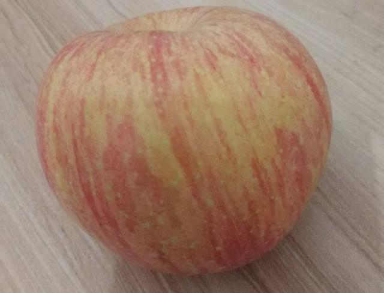

圣诞老人的传说起源于欧洲，他的人物原型是欧洲的尼古拉斯主教，不过值得注意的是，它和我们现在所看到的圣诞老人形象完全不一样。我们现在看到的圣诞老人形象，多半是胖乎乎的胖老头。
首先祝大家圣诞快乐！相信大家昨天晚上都吃了苹果。其实说到平安夜，大家第一个想到的应该是苹果。在这一天，苹果也叫平安果，平安夜吃苹果象征着平安。 但是这个习俗实际上是中国人自己发明出来的。那么外国人平安夜都吃些什么呢？实际上每一个国家在这一天的习俗都不相同，吃的东西也不相同。有些国家爱吃火鸡,点心，喝美酒；也有些国家喜欢吃胡抓鱼，鳕鱼等等，总之是多种
圣诞老人 但实际上他原本是一个瘦高个，之所以会变成今天这个形象，是因为当初圣诞老人的概念传到美国之后，也深受美国人的喜爱，而美国的胖子又比较多，同时胖乎乎的形象也显得热情友好。之后在众多艺术家的轮番轰炸之下，原本是个瘦高个的圣诞老人，就变成了我们今天所看到的景象。那一定有小伙伴要问了，圣诞老人这么胖，他爬烟囱的时候就不怕被卡住吗？其实它不怕被卡住的原因就是他下巴下面的一大佐白胡子，传说他每次爬烟囱的时候，都会用胡子来量烟囱，这样当然就不怕被卡住啦，其实圣诞老人还蛮机智的嘛。

说了这么多关于圣诞节的事情，最后不得不说回当下的圣诞节。
其实大家也都知道，在当代的各种复杂的商业竞争环境下，
诸如平安夜或者圣诞节之类的节日已经沦为各大品牌或各种产品的营销借口。
其实不仅仅是圣诞节，凡节日无论大小，都已经被各种营销广告和营销短信攻陷。
但在这其中，如果没有各大品牌的强力借势营销，恐怕这些节日也不会变得像现在这样热闹非凡。
与其说是圣诞节捧红了商业产品，不如说是商业产品广告捧红了圣诞节。